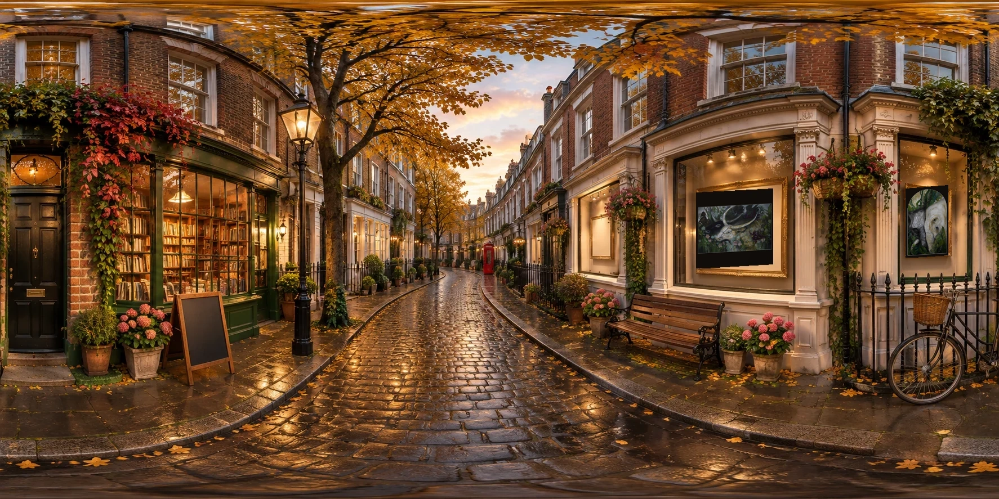
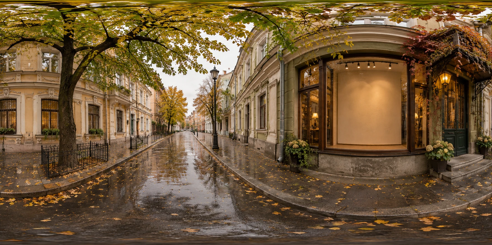
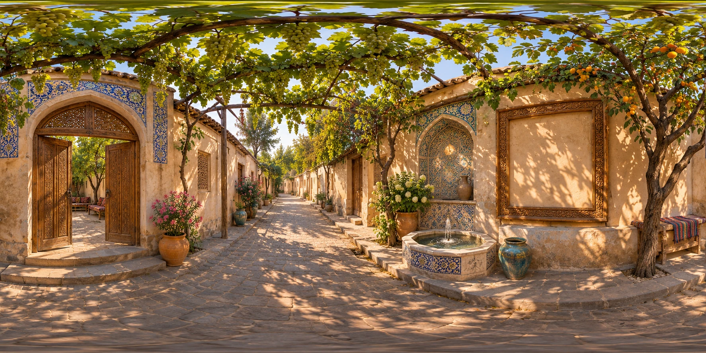

RUBINSHTEIN
THREE CITIES · ONE ARTIST
Три города. Один художник.
Выберите город, чтобы начать прогулку среди оригинальных работ Алёны Рубинштейн.

01 · ПЕРВЫЙ ГОРОД
Лондон
Четыре отдельные 360°-панорамы и восемь оригинальных работ.
ВОЙТИ НА УЛИЦУ →
02 · ВТОРОЙ ГОРОД
Москва
Пять оригинальных работ и фокусных остановок в старом московском окружении.
ВОЙТИ НА УЛИЦУ →
03 · ТРЕТИЙ ГОРОД
Ташкент
Пять оригинальных работ в тенистом дворе махалли, среди мозаики, резного дерева и садов.
ВОЙТИ ВО ДВОР →